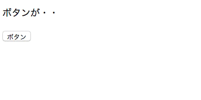
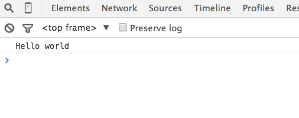
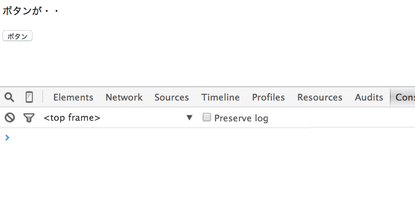

前の章で、JavaScriptの基本的な文法を学びました。そこで今回は実際にJavaScriptをページに取り入れて、以下のような「ボタンをクリックしたら文字が変わる」といった機能を作ることを通じて、JavaScriptでページに変化を加える基本的な方法を学びます。

JavaScriptのコードを書いても、実際にそれがページ上で実行されなくては意味がありません。
JavaScriptのコードは、HTMLファイル内に記載します。HTMLファイル内に、JavaScriptのコードをscriptタグで囲って配置すると、読み込まれたタイミングで実行されます。
1 2 3 4 5 6 7 8 9 10 |
<html>
<head>
<script>
console.log("Hello world"); // この行が読み込まれた時点で実行される
</script>
</head>
<body>
...
</body>
</html>
|
scriptタグで囲ったJavaScriptのコードは画面上には出力されないので、bodyタグの中に置いても、headタグの中に置いても構いません。
しかし、JavaScriptのコードが長くなってくると、HTMLファイルが膨大になりますね。HTMLファイルはあくまでもページに表示される要素の情報を持つというのが一番の役割ですから、JavaScriptはHTMLファイルから分離するのが良いと考えられます。
そこでここでは、CSSと同様に、JavaScriptだけを記述したファイルを外部に用意し、HTMLで読み込むという方法を用いましょう。
JavaScriptを記述したファイルの拡張子はjsです。
htmlファイルとjsファイルを作成し、htmlファイルからjsファイルを読み込むようにします。
1 |
console.log("Hello world");
|
また、jsファイルと同じディレクトリに、それを読み込むHTMLファイルを作成しましょう。
1 2 3 4 5 6 7 8 |
<!DOCTYPE html>
<html>
<head>
<meta charset="UTF-8" />
</head>
<body>
</body>
</html>
|
これで空のhtmlファイルを作成することができました。次に、作成したtest.jsを読み込む記述をtest.htmlに書き加えましょう。
外部のcssファイルを読み込む時は、headタグ内に以下のように記述しましたね。
1 |
<link rel="stylesheet" href="stylesheet.css"> <!-- 同じディレクトリのstylesheet.cssファイルを読み込む -->
|
外部のjsファイルを読み込む時は、headタグ内に以下のように記述します。
1 |
<script src="javascript.js"></script> <!-- 同じディレクトリのjavascript.jsファイルを読み込む -->
|
では、test.jsを読み込む記述をtest.htmlに記述しましょう。
1 2 3 4 5 6 7 8 9 |
<!DOCTYPE html>
<html>
<head>
<meta charset="UTF-8" />
<script src="test.js"></script>
</head>
<body>
</body>
</html>
|
それでは、JavaScriptが読み込まれているか確認しましょう。
コンソールはcommand + option + Jにより立ち上げることができました。コンソールに、以下のように「Hello world」の文字列が出力されていれば、test.jsが読み込まれていたことになりますね。

今回はコンソールに出力するだけのコードでしたが、これから学んでいく「HTMLの要素に変化を加えるような処理」に関しても、同様にjsファイルに記述することで実行させることができます。
htmlファイルに記述することでJavaScriptを読み込ませることができました。しかし
、Railsカリキュラムを経て、折角Railsでアプリケーションを作れるようになったのですから、RailsアプリケーションにJavaScriptを取り入れたいですね。その方法を学んでいきましょう。
PicTweetの時と全く同じように、新しくアプリケーションを作成しましょう。
1 |
$ rails new test-js -d mysql
|
これにより、test-jsという名前のアプリケーションが作成されますね。
アプリケーションの作成をしただけでは、ページにアクセスすることはできません。
以下の手順を追って、ページにアクセスできるようにしましょう。
① bundle installにより必要なgemをインストールする
② データベースを作成する
③ コントローラーを作成し、アクションを定義する
④ 作成したアクションに対応するビューを作成する
⑤ 作成したアクションに対応するルーティングを追加する
まず、①のgemのインストールを行いましょう。rails newによりアプリケーションを作成した直後に、デフォルトで生成されるGemfileに従って既にbundle installがされています。
そのため、デフォルトでインストールされるgemで問題無ければbundle installを改めて実行する必要はありません。
PicTweetでは、アプリケーションを作成した後に、使用するgemをGemfileに追記しました。そのgemをインストールするために、bundle installを手動で実行する必要があったのでした。
さて、今回は特に追記するgemはありませんが、デフォルトでインストールされるgemであるmysql2の最新版(0.4.0)には問題があるため、Gemfileの記述を変更し、低いバージョンを指定する必要があります。
1 2 |
# 7行目付近のmysql2の記述を以下のように書き換える
gem 'mysql2', '0.3.18'
|
これにより、使うmysql2のバージョンを指定することができました。それではbundle installしましょう。
※なお、以下の操作は全てアプリケーションのディレクトリで行って下さい。
1 |
$ bundle install
|
これによりgemのインストールと、アプリケーションが使用するgemの一覧であるGemfile.lock更新が行われます。
次に②のデータベースの作成から行いましょう。
1 |
$ rake db:create
|
これによりデータベースが作られました。
次に、③のコントローラーの作成とアクションの定義を行いましょう。
今回は、topコントローラーを作成し、indexアクションを定義することで、アプリケーションのトップページを作りましょう。
1 |
$ rails g controller top
|
これによりtopコントローラーが作成されました。次に、topコントローラーにindexアクションを作成します。
1 2 3 4 |
class TopController < ApplicationController
def index
end
end
|
これによりindexアクションが定義されました。
次に、④のビューの作成を行いましょう。
中身は空で構いません。
最後に、⑤のルーティングの追加を行いましょう。
1 2 3 |
Rails.application.routes.draw do
root 'top#index'
end
|
これにより、ルートパス（localhost:3000/）にアクセスされると、topコントローラーのindexアクションが実行され、index.html.erbが表示されるという流れが出来上がりました。
さて、先程は外部のJavaScriptを読み込むといった記述をheadタグ内にしました。
Railsではどのようにして外部のJavaScriptファイルを読み込めば良いのでしょうか。
PicTweetで、外部のcssファイルを読み込む方法を学びました。JavaScriptにおいても同様の方法で読み込むことができます。復習も兼ねて、少し詳しく一から説明します。
Railsにおいてもheadタグ内に記述することで、外部のJavaScriptファイルを読み込むことができます。
Railsにおけるheadタグはどこにあるのでしょうか。ここで、レイアウトとテンプレートという概念を復習しましょう。
Railsでは、実際に表示されるHTMLとなるビューは、application.html.erbといったレイアウトと呼ばれるものと、index.html.erbといったテンプレートと呼ばれるもので構成されています。
テンプレートファイルは、index、show等のアクション毎に存在し、それぞれで表示するHTMLを記述します。
一方で、レイアウトファイルは、PicTweetのナビゲーションバーや、moooviのランキング表示部分など、多くのページで共通するHTMLを記述します。
headタグも多くのページで共通する部分と言え、レイアウトファイル内に記述されるのが一般的であり、デフォルトではapplication.html.erbに記述されています。
application.html.erbは以下のようになっています。
1 2 3 4 5 6 7 8 9 10 11 12 13 14 |
<!DOCTYPE html>
<html>
<head>
<title>TestJs</title>
<%= stylesheet_link_tag 'application', media: 'all', 'data-turbolinks-track' => true %>
<%= javascript_include_tag 'application', 'data-turbolinks-track' => true %>
<%= csrf_meta_tags %>
</head>
<body>
<%= yield %>
</body>
</html>
|
6行目に注目してください。実は、外部のJavaScriptを読み込むという記述は既にされており、このjavascript_include_tagという記述によって、app/assets/javascripts/application.jsが読み込まれています。
デフォルトでは、application.jsの中身は以下のようになっています。
1 2 3 4 5 6 7 8 9 10 11 12 13 14 15 16 |
// This is a manifest file that'll be compiled into application.js, which will include all the files
// listed below.
//
// Any JavaScript/Coffee file within this directory, lib/assets/javascripts, vendor/assets/javascripts,
// or any plugin's vendor/assets/javascripts directory can be referenced here using a relative path.
//
// It's not advisable to add code directly here, but if you do, it'll appear at the bottom of the
// compiled file.
//
// Read Sprockets README (https://github.com/rails/sprockets#sprockets-directives) for details
// about supported directives.
//
//= require jquery
//= require jquery_ujs
//= require turbolinks
//= require_tree .
|
//はJavaScriptにおけるコメントアウトを表します。そのため、上記の記述は全てJavaScriptとしては実行されません。
しかし、Railsは上記の記述を読んでおり、//= require ***といった記述を見て、gemの中から、あるいは、app/assets/javascripts/や、vendor/assets/javascripts/以下から、***.js等のJavaScriptファイルを探し、application.jsの中に取り込みます。
また、require_tree .という記述をすると、application.jsと同じディレクトリ、すなわちapp/assets/javascripts以下の全てのJavaScriptファイルをapplication.jsの中に取り込みます。
つまりRailsではデフォルトで、全てのページでapp/assets/javascripts/application.jsが読み込まれるようになっていて、application.jsは、そのファイル内でrequireしたJavaScriptファイル、また、同じディレクトリ以下に含まれるJavaScriptファイルにより構成されているということです。
よって、RailsにJavaScriptを取り入れるには、jsファイルをapp/assets/javascripts/以下に配置するだけで良いということになります。全てのページでそのjsファイルが読み込まれることになります。
ちなみに、上記のように沢山のJavaScriptファイルをapplication.js一つのファイルにまとめる仕組みをAsset Pipelineと言います。一つのファイルにまとめることで、読み込み速度の向上などが期待されます。
現状、app/assets/javascripts/以下は以下のようになっていると思います。
top.coffeeという（ほぼ）空のファイルがあります。coffeeというのは、CoffeeScriptで記述されたファイルのことを表し、CoffeeScriptとは、JavaScriptの表現方法の一つです。
rails g controller topと実行した時に、topコントローラーに関するscss（cssの表現方法の一つ）、coffeeファイルも同時に作られていたのです。
今回はCoffeeScriptでなく、通常のJavaScript（生JSと呼んだりします）を記述するので、このファイルは不要となります。また、 同名のCoffeeファイルがあると、JavaScriptファイルが読み込まれなくなるため、top.coffeeは削除してください。
CoffeeScriptの書き方は、JavaScriptを一通り書けるようになってから学ぶのが良いでしょう。
それでは、トップページで読み込むJavaScriptファイルを配置しましょう。
1 |
console.log("Hello world");
|
Railsでは、CSSやJavaScriptのファイル名は(表示するビューのコントローラー名).js等とするのが一般的です。
ファイルを分けても分けなくても、結局application.js、application.cssにまとめられ、全ページで読み込まれてしまいますが、ファイルが分かれていることで管理しやすくなります。
それでは、先程と同様に、JavaScriptが読み込まれているか確認しましょう。
コンソールはcommand + option + Jにより立ち上げることができました。コンソールに「Hello world」の文字列が出力されていれば、top.jsが読み込まれていたことになりますね。
以上により、RailsアプリケーションにJavaScriptファイルを読み込むことができました。
それでは、test-jsアプリケーションのトップページに、「ボタンをクリックしたら文字が変わる」という簡単な機能を実装していきましょう。
この機能を実装するためには、「ボタンがクリックされたかどうか」がわからなくてはなりません。ボタンがクリックされたら、「文字を変える」という処理を実行すれば良さそうですね。
また、なによりもまず、HTML上の「ボタン」をJavaScript上で扱えるようにしなくてはなりません。
ボタンはHTMLの要素です。HTMLの要素をJavaScript上でオブジェクトとして扱えるようにするために、DOMという仕組みを使います。
DOMは、Document Object Modelの略で、HTMLの一つ一つの要素を、JavaScriptのオブジェクトとして扱えるようにする仕組みです。特にそのHTML一つ一つの要素に対応するオブジェクトのことを、DOMオブジェクトと呼びます。
実際にボタンをDOMオブジェクトとして取得しましょう。まずは、ビューにボタンを追加しましょう。
1 |
<input type="button" value="ボタン">
|
これにより、トップページのビューにボタンが追加されました。
次に、このボタンをDOMオブジェクトとして取得します。
DOMオブジェクトとして取得する方法はいくつかありますが、ここではdocumentオブジェクトのquerySelectorメソッドを使います。documentオブジェクトとは、元から用意されている、そのページのHTML情報を含んでいるオブジェクトです。
querySelectorメソッドは引数を持ち、HTML上でその引数で指定したセレクタに合致するもののうち、一番最初に見つかった要素をDOMオブジェクトとして返します。
moooviのスクレイピングで、Mechanize::Pageオブジェクトに対して用いたatメソッドによく似ています。
1 |
document.querySelector("input");
|
返り値として、ボタンのHTMLタグのようなものが得られますね。これがDOMオブジェクトとなっています。
querySelectorメソッドでは、Mechanize::Pageオブジェクトのatメソッドやsearchメソッドと同様に、複雑なセレクタも指定できます。
1 2 |
document.querySelector("form .btn"); // formタグ要素の中の、クラスがbtnの要素
document.querySelector("#footer a.next"); // idがfotterの要素の中の、クラスがnextのaタグ要素
|
さて、querySelectorメソッドを使って、ボタンをJavaScript上で取得することができました。次は、「ボタンをクリックしたら」を取得しましょう。
ボタンが「クリックされたかどうか」を取得するために、JavaScriptのイベントと呼ばれる概念を使います。
「クリックする」「マウスを乗せる」など、ブラウザ上で起きる出来事をイベントと呼びます。
ある要素に対してあるイベントが起きた時になんらかの処理を実行したい場合、イベントリスナーというものを定義し、イベントが起こった時の処理を書きます。イベントリスナーは、DOMオブジェクトのaddEventListenerメソッドを使って定義することができます。
addEventListenerメソッドはDOMオブジェクトのメソッドで、以下のようにして実行します。
1 |
(DOMオブジェクト).addEventListener("イベント名", 関数);
|
上記のような記述により、この記述の読み込み以降で「DOMオブジェクト」に「イベント」が起きた時に、「関数」を実行するようになります。
一つのイベントと一つの関数を紐付ける仕組みのことをイベントリスナと呼びます。
一つのイベントに複数の関数を紐付ける場合は、関数の数だけイベントリスナが存在します。
addEventListenerは、あるDOMオブジェクトに対して、そのDOMオブジェクトのイベントに関数を紐付ける仕組みであるイベントリスナを追加するメソッドである、ということです。
なお、addEventListenerメソッドが引数として関数を取っていることが奇妙に見えますが、これは前の章で説明したように、JavaScriptでは関数は数値や文字列同様、一つの値であるとみなされていることに因ります。
では、addEventListenerメソッドを用いて、ボタンがクリックされたらコンソールに適当な文字列を出力するようにしてみましょう。
1 2 3 4 5 6 7 8 9 10 11 |
var btn = document.querySelector("input");
// ボタンをDOMオブジェクトとして取得し、変数btnに代入する
function printHello() {
console.log("Hello world");
}
// printHello関数を定義
btn.addEventListener("click", printHello);
// ボタンのDOMオブジェクトであるbtnに対して、
// clickイベントとprintHello関数を紐付ける仕組みであるイベントリスナを追加する
|
これにより、トップページにてボタンをクリックするとコンソールに「Hello world」と出力されることが期待できます。
しかし、実際にブラウザでボタンをクリックしてもコンソールに何も表示されません。
今回コードを記述したtop.jsは、application.jsの中で呼び出されています。
application.jsは、application.html.erbのheadタグ内に記述されています。
よって、ブラウザがこのJavaScriptのコードを読み込む時、まだhtmlファイルの内headタグ内までしか読み込まれておらず、bodyタグ内にあるinputタグは読み込まれていなかったのです。
そのため、querySelectorメソッドによりボタンのDOMオブジェクトは取得できず、変数btnの中身はnull（何も無いという意味）となっていたのです。
nullのプロパティとしてaddEventListenerメソッドが実行されることとなり、コンソールではそれに対するエラーとして以下のように表示されます。
1 |
Cannot ready property 'addEventListener' of null
|
この問題を解決するために、上記の一連の処理を、「ページの読み込みが終わったら」実行するようにします。
「ページの読み込みが終わる」というイベントは、windowオブジェクトのloadイベントに対応します。そこで、windowオブジェクトのloadイベントに対応する関数として上記の一連の処理を定義すれば良いと考えられます。なお、windowオブジェクトは、元から用意されている、ブラウザの情報を持つオブジェクトです。
1 2 3 4 5 6 7 8 9 10 11 12 13 14 |
function printHelloWithButton() {
var btn = document.querySelector("input");
function printHello() {
console.log("Hello world");
}
// 関数内で定義された関数は、関数の中でしか呼び出せないという性質があるだけで、
// 通常の関数同様に呼び出せる
btn.addEventListener("click", printHello);
}
// 一連の処理をまとめた関数を作る
window.addEventListener("load", printHelloWithButton);
|
これにより、windowオブジェクトのloadイベントが起きたら、つまりページの読み込みが終わったら、printHelloWithButton関数が実行されることになります。
この時、ページは読み込まれているため、DOMオブジェクトとしてinputタグを取得することができ、イベントリスナを正常に追加することができます。
実際にトップページにアクセスし、ボタンをクリックすると、コンソールにHello worldの出力がされますね。
さて、ここで少し上記のコードを見直しましょう。まず、console.log一行のために関数を定義しているのは冗長であると考えられます。
わざわざ関数として定義しているのは、addEventListenerメソッドの第二引数として、関数を指定しなくてはならないからです。
そこで、addEventListenerメソッドの第二引数内で、関数を定義することを考えます。
以下の例を見て下さい。
1 2 3 4 |
function func() {}
// 何もしないfunc関数
btn.addEventListener("click", func);
|
これはこのようにも書けます。
1 |
btn.addEventListener("click", function func() {});
|
addEventListenerの第二引数部分に、関数の定義部分を移動しただけですね。
また、先程は関数を呼び出すために関数名をつけていましたが、以下のように名前（上の例で言えばfunc）を省略することができます。名前の無い関数のことを無名関数と呼びます。
1 |
btn.addEventListener("click", function() {});
|
上の例では関数の中身は何もありませんが、処理がある場合（殆どの場合）は一般に改行を用いて以下のように書きます。
1 2 3 |
btn.addEventListener("click", function() {
// 処理
});
|
この書き方を用いて、top.jsの中身を書き換えてみましょう。
まず、window.addEventListenerの第二引数部分を書き換えます。
1 2 3 4 5 6 7 8 9 |
window.addEventListener("load", function() {
var btn = document.querySelector("input");
function printHello() {
console.log("Hello world");
}
btn.addEventListener("click", printHello);
});
|
次に、btn.addEventListenerの第二引数部分を書き換えます。
1 2 3 4 5 6 7 |
window.addEventListener("load", function() {
var btn = document.querySelector("input");
btn.addEventListener("click", function() {
console.log("Hello world");
});
});
|
随分とすっきりとしました。このような書き方もよく使われるので、押さえておきましょう。
ボタンがクリックされた時に、なんらかの処理を実行するようにすることができたので、いよいよ「文字が変わる」処理を実装しましょう。
まずはビューに変える対象である文字を追加しましょう。
1 2 3 4 |
<p>
ボタンが・・
</p>
<input type="button" value="ボタン">
|
それでは、文字を変える対象であるpタグをDOMオブジェクトとして取得してみましょう。
1 |
document.querySelector("p");
|
これにより、pタグをDOMオブジェクトとして取得できました。
DOMオブジェクトには、innerTextプロパティが定義されています。これは、タグで囲まれた中身のテキストに対応しています。
innerTextプロパティを書き換えると、ページの表示も変わります。実際に試してみましょう。
1 2 |
var p = document.querySelector("p");
p.innerText = "クリックされた！";
|

ページの表示が変わりましたね。
では上記の処理を、ボタンに対するaddEventListenerメソッドの第二引数に記述してみましょう。
1 2 3 4 5 6 7 8 |
window.addEventListener("load", function() {
var btn = document.querySelector("input");
btn.addEventListener("click", function() {
var p = document.querySelector("p");
p.innerText = "クリックされた！";
});
});
|
以上により、「ボタンをクリックしたら文字が変わる」機能の実装は完了です。
重要なのはDOMとイベントという概念です。DOMオブジェクトには他にも沢山のプロパティがありますから、「クリックしたら画像が変わる」といった処理等も同様にして実装することができます。
お疲れ様でした！このカリキュラムの終わりに確認問題を解きましょう。
 大宅 誠人
大宅 誠人